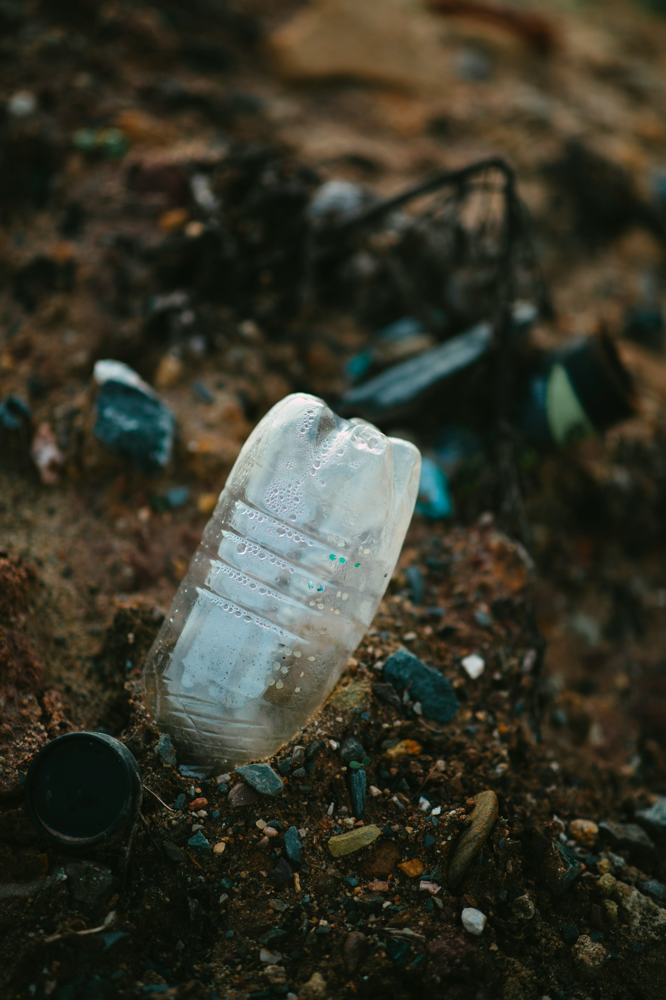

Tengeri élővilág veszélyeztetése:
A tengeri élővilágot a túlhalászás, vízszennyezés, klímaváltozás és élőhelyek elvesztése veszélyezteti. Mivel az emberek túl sokat használják a műanyagot, súlyosan károsítja az ökoszisztémákat. A tengeri fajok védelme érdekében sürgős intézkedések szükségesek.


Csökkenteni a műanyag használatát:
Az egyszer használatos műanyagok, mint szívószálak és zacskók, súlyosan hozzájárulnak a hulladékfelhalmozódáshoz. A műanyagok mikroműanyagokká eshetnek szét, amelyek bekerülhetnek a táplálékláncba, így akár az emberi fogyasztásba is eljuthatnak. A probléma csökkentéséhez fontos a környezetbarát alternatívák használata, az újrahasználat, az újrahasznosítás és a tudatosság növelése.